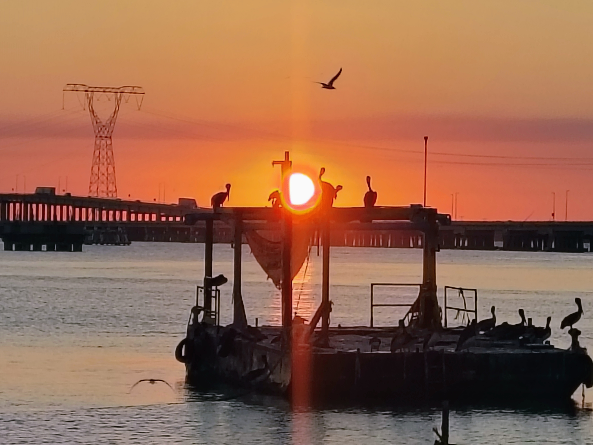
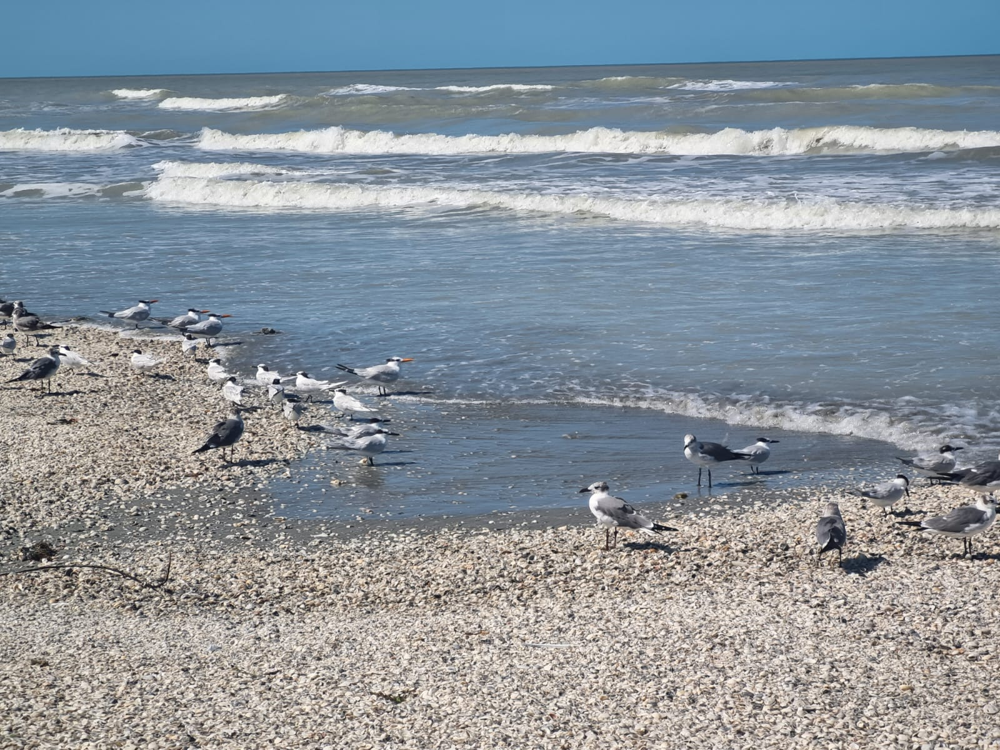

Descripción del trabajo
Mi ojo fotográfico se centra en la narrativa ambiental. Me apasiona documentar cómo la luz natural interactúa con los paisajes costeros y cómo los elementos cotidianos pueden convertirse en protagonistas de una escena.
Herramientas utilizadas
- Adobe Photoshop
- Picsart
- Adobe Lightroom




